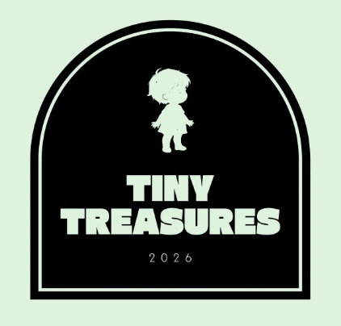

Why Tiny Treasures?
We bridge the gap between style and sustainability. Our marketplace is a curated space where premium pre-loved items get a second chance.

TINY TREASURESAt Tiny Treasures, we believe childhood is a time for endless adventure, not for waste.
We bridge the gap between style and sustainability. Our marketplace is a curated space where premium pre-loved items get a second chance.
Choosing pre-loved isn't just saving money, it's reducing your water footprint and carbon emissions for a greener future.
Every piece is hand-selected to meet our high standards, ensuring garments that are as beautiful as they are sustainable.
We are proud to be at the forefront of the circular economy in the Czech Republic, helping families make conscious choices without compromising on quality.